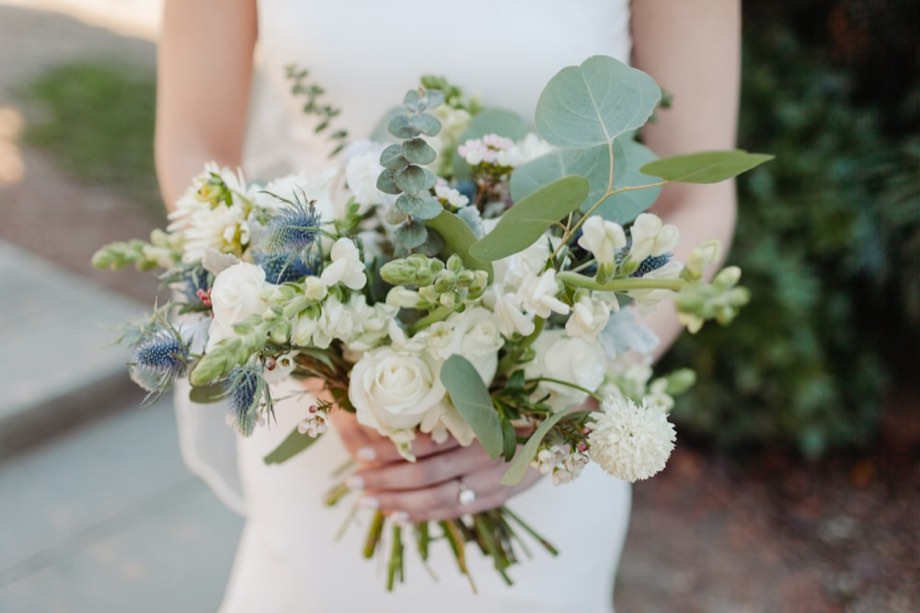
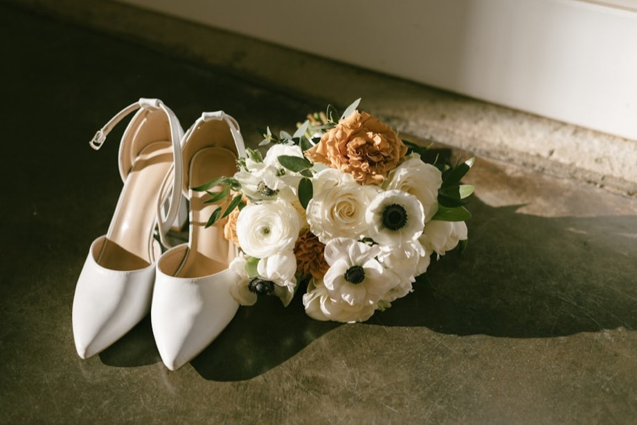
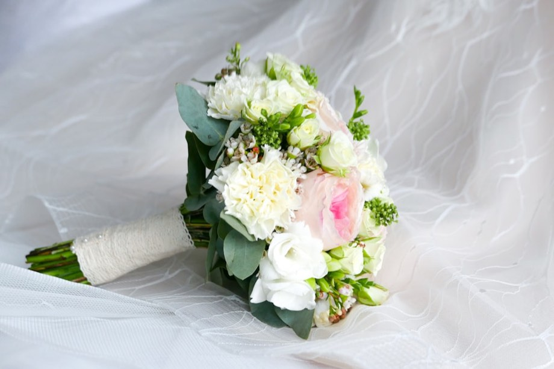

서로에게 익숙해지는 데
여덟 번의 봄이 걸렸습니다.
이제는 같은 곳을 보며 걷기로,
같은 이름으로 불리기로 했습니다.
귀한 걸음으로 축복해 주시면
더없이 감사하겠습니다.
| S | M | T | W | T | F | S |
|---|

참석이 어려우신 분들을 위해 계좌를 안내드립니다.
축하해 주시는 마음만으로도 충분히 감사합니다.
식사 준비를 위해 참석 여부를 알려 주시면
정성껏 준비하겠습니다.

긴 이야기의 첫 장을
함께 넘겨 주셔서 감사합니다.
소중한 분들을 부족함 없이 모실 수 있도록
미리 여쭙습니다.